Understand the Streams
Compare Science, Commerce, and Arts & Humanities, review common subject combinations, and think about what you enjoy learning.
Elevate your path
Find a direction that fits you. Explore streams, interests, and future careers.
Discover Aether Path ↓Your guide after Class 10
Aether Path brings useful starting points together in one place. Explore what you can study, reflect on what interests you, and discover career directions to research further.
Compare Science, Commerce, and Arts & Humanities, review common subject combinations, and think about what you enjoy learning.
Browse government and private-sector opportunities separately, with examples grouped by stream and notes about typical further study.
Try a short interest test for ideas to explore, and visit Weekly Activities to read about CSP work and learning.
Choose a study direction
Start with the subjects and activities you enjoy. Subject choices and combinations vary by school and board.
Physics, Chemistry, Biology, Mathematics, and Computer Science.
PCM: Physics, Chemistry, and Mathematics. Often connected to engineering, computing, and physical sciences.
PCB: Physics, Chemistry, and Biology. Often connected to medicine, healthcare, and life sciences.
PCMB: Includes Mathematics and Biology, with a heavier subject load.
Business Studies, Accountancy, Economics and, depending on the school, Mathematics.
Commerce with Mathematics may suit students interested in economics, finance, or analytics.
Commerce without Mathematics may suit students interested in business, management, marketing, or entrepreneurship. Check course requirements before choosing.
History, Political Science, Psychology, Geography, Sociology, Economics, and Languages.
Law, public service, journalism, media, psychology, design, teaching, and social work.
Continue exploring
Take a short interest test or explore career examples by employer sector.
Remember: These are examples, not a complete list. Many careers require further study, training, professional registration, or competitive examinations. Check course prerequisites and current recruitment notices.
A quick self-check
Choose one answer for each question. This is a starting point for exploration, not a final decision about your future.
This informal activity does not measure ability or choose a stream for you. Use the result as one discussion point with a teacher or guardian.
Public service pathways
Examples of roles and typical background-study routes. Eligibility varies by post and recruitment notice.
Support public works, railways, power, telecommunications, or technical departments.
Background study: Take a relevant science or technical route after Class 10. Depending on the post, you may need a diploma or Classes 11–12 followed by an engineering degree. Recruitment rules vary.
Work in public research organisations in space, defence, energy, or materials.
Background study: Science with Mathematics followed by a relevant engineering or science degree is common. Research posts may require postgraduate study and a role-specific selection process.
Serve in government hospitals and public health programmes.
Background study: The doctor route usually includes Biology in Classes 11–12, NEET-UG, and an approved MBBS course with required training. Nursing, pharmacy, and allied-health careers have separate course and entry rules.
Support conservation, farming, and natural-resource programmes.
Background study: Complete Classes 11–12, then a degree related to the advertised role, such as agriculture, forestry, or environmental science. Some posts have additional standards or selection stages.
Handle customer services, lending, branch operations, and related work.
Background study: Complete Class 12 and a recognised bachelor's degree. Many bank recruitments accept graduates from different subjects, followed by the required bank exam.
Maintain or review public financial records in departments and audit bodies.
Background study: Commerce with Accountancy is a helpful foundation. Many graduate posts ask for a bachelor's degree; some specify commerce, accounting, or professional qualifications.
Support tax administration, document review, and compliance in departments.
Background study: Many graduate-level routes require a bachelor's degree followed by the recruiting body's exam. Some posts have different minimum qualifications.
Help manage public funds, compile data, or support economic programmes.
Background study: Economics, Mathematics, or Statistics can be useful. Some statistical roles specifically require Statistics or Mathematics.
Work in public administration and delivery of government programmes.
Background study: Complete Class 12 in any stream, then a recognised bachelor's degree. UPSC and state commission exams have their own eligibility rules.
Support administration, audit, or department work in government offices.
Background study: Many graduate-level roles require a bachelor's degree and a recruitment examination. Check each post's notice for exact requirements.
Teach in public schools after completing the qualifications required for the post and state.
Background study: Study the subject you wish to teach at degree level, then complete recognised teacher education and the tests required for that teaching level.
Work in communication, cultural institutions, or community programmes.
Background study: A relevant degree such as languages, journalism, social work, or history can help. Some posts require specialised postgraduate study or experience.
Companies, organisations, and independent work
These examples include typical study routes. Employers and regulated professions can have specific requirements.
Build digital products or study data to help teams make decisions.
Background study: Mathematics and Computer Science can be useful. A related degree, diploma, or computing qualification, plus practical projects, can help.
Design, build, and maintain products, machines, buildings, or systems.
Background study: A common route is PCM in Classes 11–12, followed by an engineering degree or approved technical qualification. Course-entry rules vary.
Care for patients or support treatment in nursing, pharmacy, physiotherapy, and allied health.
Background study: Take the subjects required for the chosen course, then complete its recognised degree or diploma. Entry and registration rules differ by profession.
Test samples, run experiments, and record results in labs.
Background study: Classes 11–12 Science followed by a relevant bachelor's degree, such as chemistry, biology, biotechnology, or medical laboratory science. Research roles may need postgraduate study.
Work on conservation, sustainability, crop science, or environmental monitoring.
Background study: A degree or diploma in agriculture, environmental science, forestry, or a related field may be relevant.
Maintain accounts, prepare reports, check records, or help with tax compliance.
Background study: Commerce with Accountancy is useful, followed by a bachelor's degree in commerce, accounting, or finance for many roles. CA and CMA have separate exams and requirements.
Assist customers, review applications, process transactions, or explain financial products.
Background study: Complete Class 12 and often a bachelor's degree in commerce, business, economics, or finance. Employers set their own requirements.
Study sales, costs, customers, or market trends and explain what the information means.
Background study: A degree in business, economics, statistics, finance, or a related subject can help. Spreadsheet and data-analysis skills are useful.
Support campaigns, recruitment, staff services, supply chains, or daily business operations.
Background study: A business, commerce, marketing, or human-resources degree or diploma can be useful. Internships help build experience.
Plan and run a business, manage money, and serve customers.
Background study: No single stream is required for every business. Business study can help with planning; practical experience matters too.
Research stories, interview people, and produce articles, video, or digital news.
Background study: A degree or diploma in journalism, media, or communication can help. Build writing and reporting skills and a portfolio.
Create website content, campaigns, reports, or social-media material.
Background study: Languages, English, journalism, media, or communication study can help. Employers often value writing samples.
Prepare legal documents, research cases, or advise clients.
Background study: After Class 12, apply for an approved integrated law degree, or complete a bachelor's degree followed by an approved LL.B. To practise, meet Bar Council and enrolment requirements.
Support people, families, or communities.
Background study: Study psychology or social work at degree level. Clinical roles may require postgraduate study, supervised practice, and registration.
Teach, create learning materials, develop visual communication, or manage public messaging.
Background study: Teachers need qualifications and training for the role. Designers can build skills through a design course and portfolio; PR roles may suit communication or media study.
These are examples rather than a complete list. Private employers set role-specific requirements.
CSP progress
Select a week to view its report.
Project: Career Guidance for Class 10 Students
This week, our group introduced the Community Service Project at the Sachivalayam and discussed our plan to help Class 10 students learn about study streams and future career options.
| Day | Activity | Observations / Notes |
|---|---|---|
| Day 1 | Visited the Sachivalayam. | Introduced our career-guidance project and respectfully requested permission to carry it out. |
| Day 2 | Explained the project purpose. | Described how the project can help students understand study streams and pathways after Class 10. |
| Day 3 | Presented our project plan. | Outlined plans to gather information about subjects, further study, and government and private-sector careers. |
| Day 4 | Discussed responsible project work. | Recognised the importance of permission, respectful communication, and clear information. |
| Day 5 | Reviewed the next steps. | Organised webpage topics and prepared to collect and check information for students. |
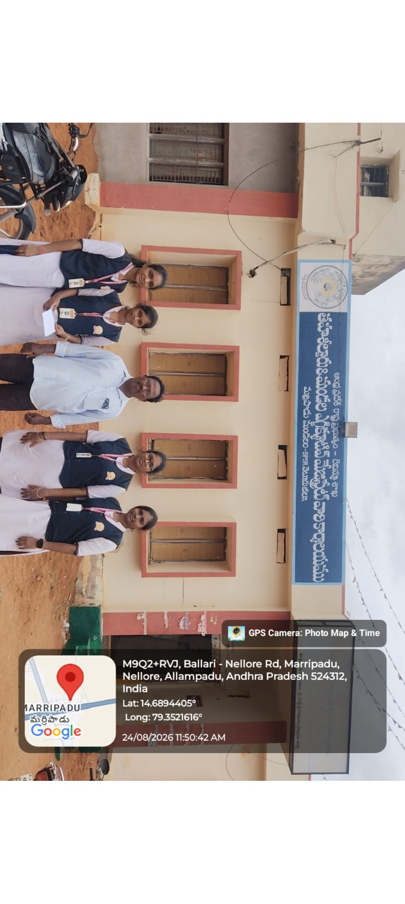
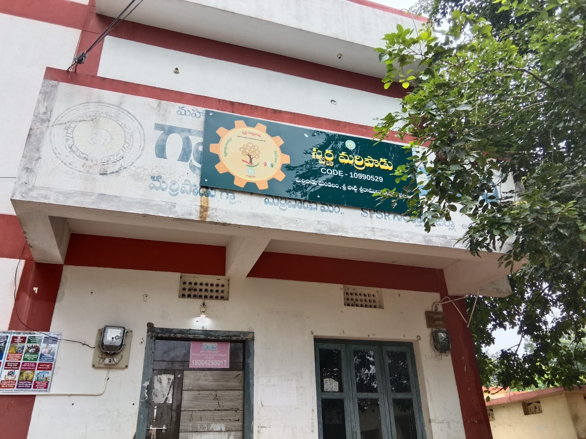
Location: Nandavaram Model School, Marripadu Mandal
Our group visited the school, discussed the project with the principal, received permission, and interacted with faculty and students.
| Day | Activity | Observations / Notes |
|---|---|---|
| Day 1 | Visited Nandavaram Model School. | Introduced our group and explained the Class 10 career-guidance project. |
| Day 2 | Met the principal and requested permission. | Explained our purpose and planned school interactions. Permission was received. |
| Day 3 | Interacted with faculty members. | Introduced our plan and discussed helping students learn about streams and career choices. |
| Day 4 | Interacted with Class 10 students. | Listened to students' questions and interests about choices after Class 10. |
| Day 5 | Reviewed the visit and planned follow-up. | Summarised the school visit and prepared topics for the next student session. |
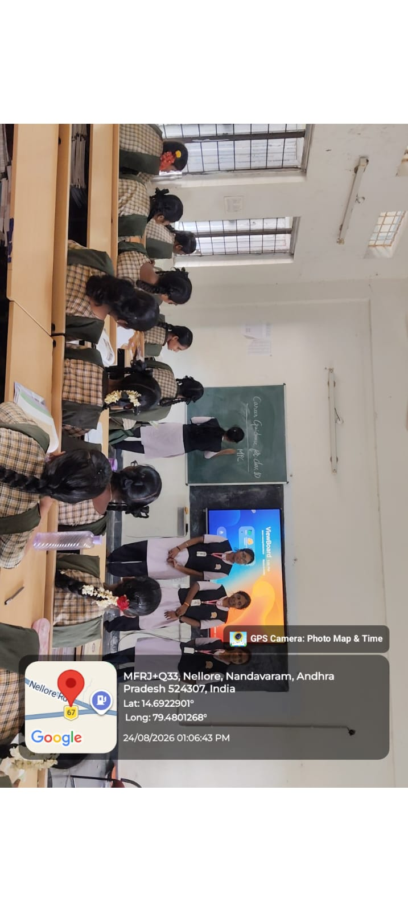
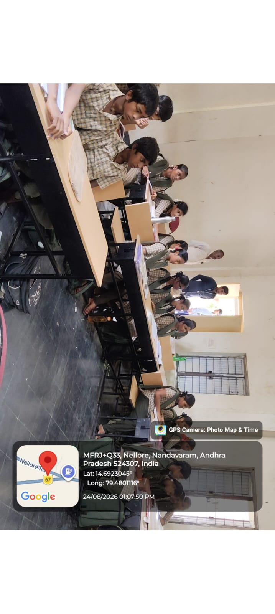
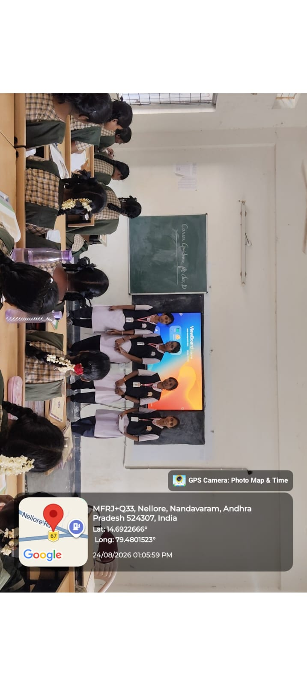
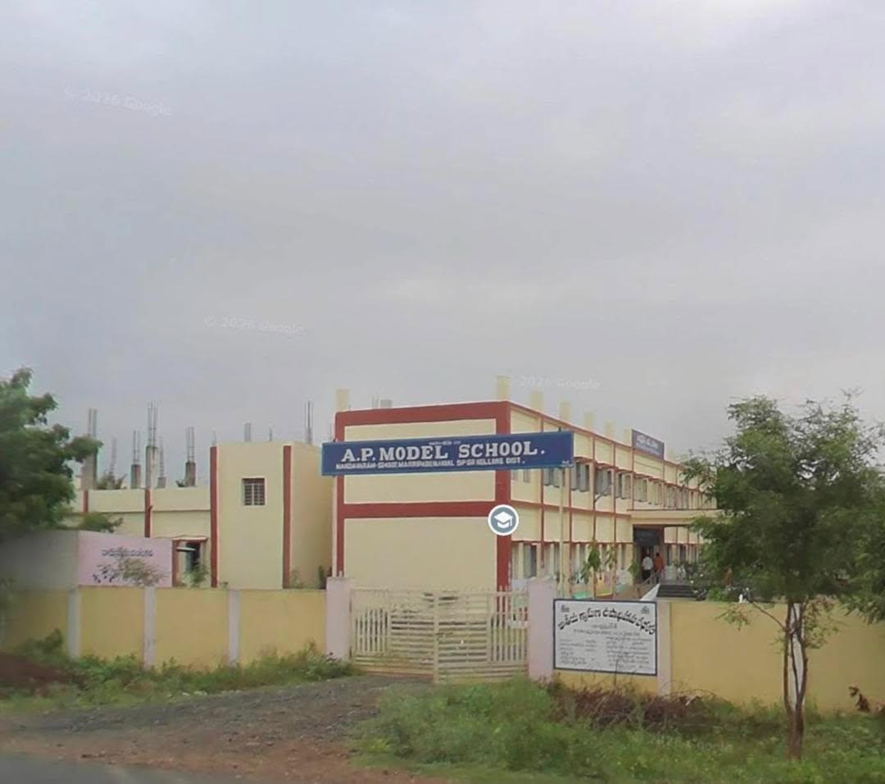
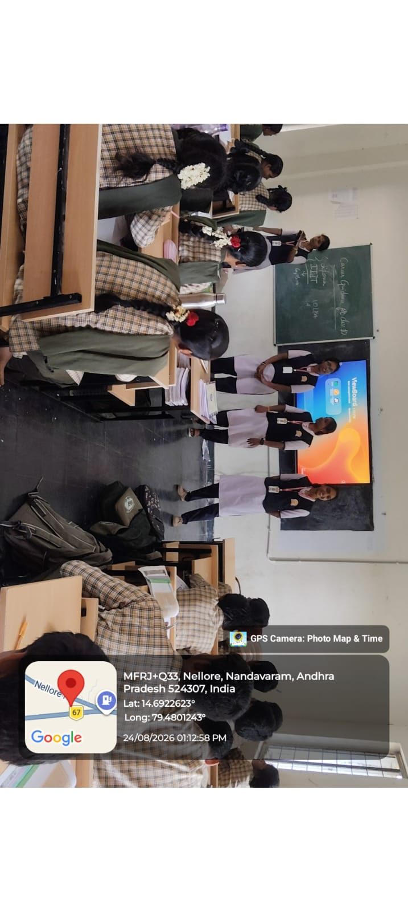
Location: Kasturba Girls High School
We visited the school, obtained the principal's permission, and spoke with students about their awareness, interests, future goals, and challenges in learning about career options. On the final day, we organised the information and analysed student interests.
| Day | Activity | Observations / Notes |
|---|---|---|
| Day 1 | Visited Kasturba Girls High School. | Introduced our group and explained that our project supports Class 10 students in exploring education and career choices. |
| Day 2 | Met the principal and requested permission. | Explained the purpose and planned student interactions. We obtained permission before proceeding. |
| Day 3 | Asked students career-awareness questions. | Asked what students knew about career options and which subjects, activities, or work types interested them. |
| Day 4 | Discussed students' goals and challenges. | Invited students to share what they hoped to become and what difficulties they faced finding information about courses and careers. |
| Day 5 | Prepared documentation and analysed student interests. | Organised notes about student interests, awareness, aspirations, and information needs. |
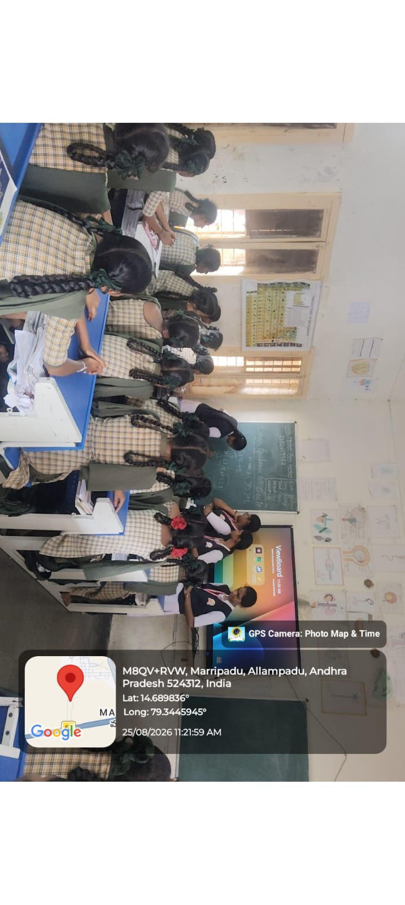
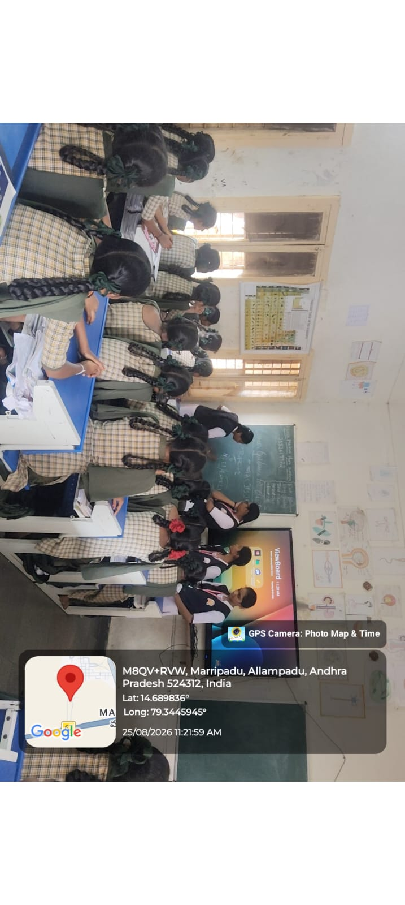
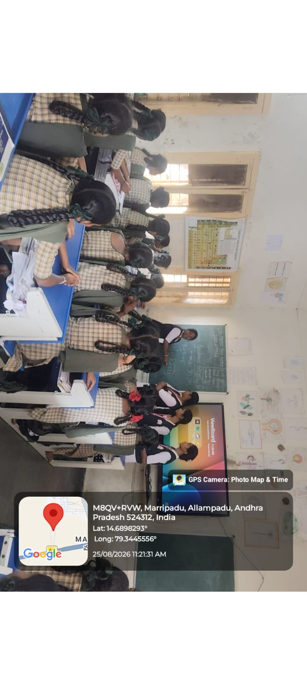
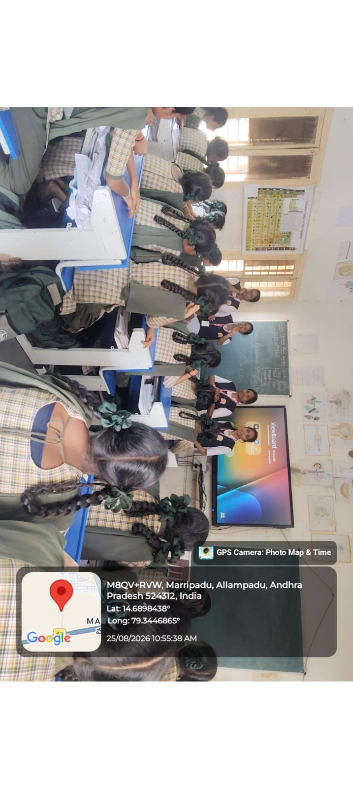
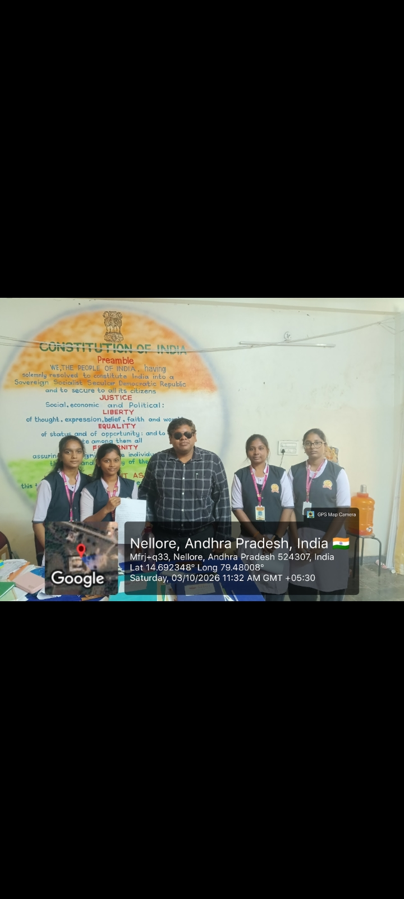
Location: Nandavaram Government School, Marripadu Mandal
We visited the school, discussed our project with the principal and faculty, and learned about students' career awareness, interests, and questions.
| Day | Activity | Observations / Notes |
|---|---|---|
| Day 1 | Visited Nandavaram Government School. | Introduced our group and explained the project's purpose. |
| Day 2 | Met the principal and requested permission. | Explained the planned faculty and student interactions and received permission. |
| Day 3 | Discussed the project with faculty. | Shared our career-guidance plan and discussed student guidance needs. |
| Day 4 | Spoke with students about career awareness. | Asked what careers they knew, what they hoped to pursue, and where they needed information. |
| Day 5 | Organised notes and reviewed student needs. | Prepared school documentation and grouped student questions and interests. |
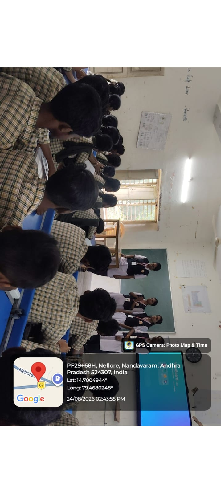
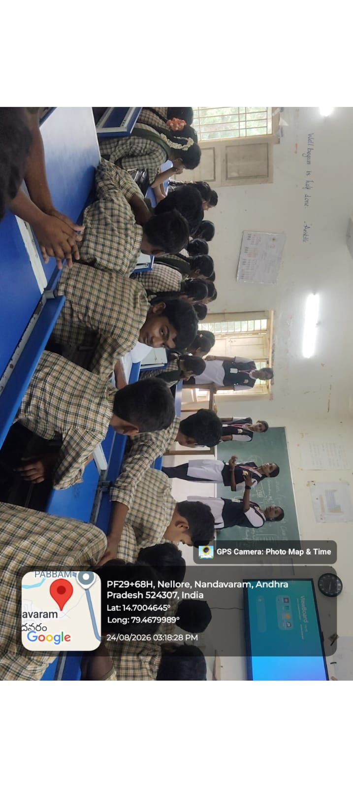
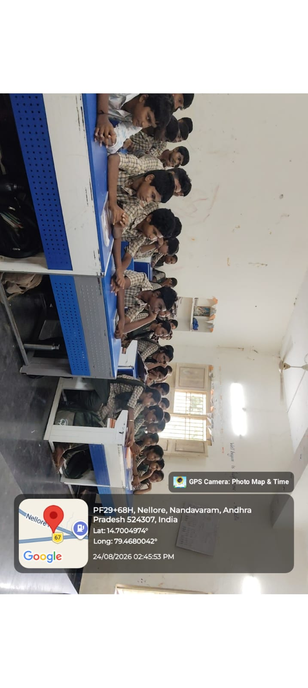
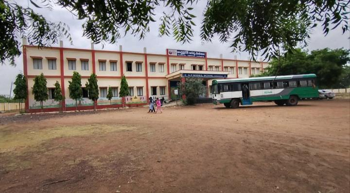
Location: Government School, Marripadu
Our group visited the school and conducted career-guidance classes for students.
| Day | Activity | Observations / Notes |
|---|---|---|
| Day 1 | Visited the school and met the staff. | Introduced our group and discussed arrangements for the sessions. |
| Day 2 | Introduced the purpose of the classes. | Discussed why learning about streams and careers can help students plan next steps. |
| Day 3 | Conducted a class about study streams. | Presented Science, Commerce, and Arts & Humanities with examples of further study. |
| Day 4 | Discussed careers and answered questions. | Shared government and private-sector career examples and encouraged students to consider their interests. |
| Day 5 | Reviewed the sessions and recorded feedback. | Summarised covered topics, student questions, and areas needing explanation. |
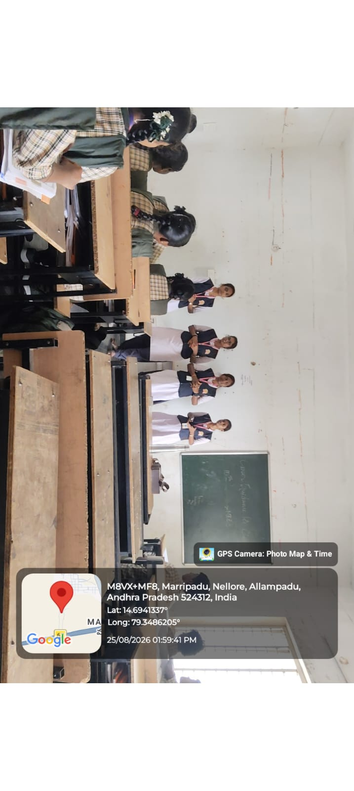
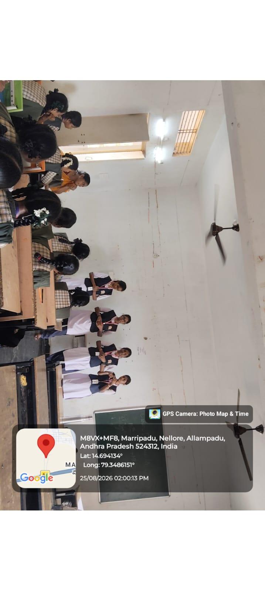
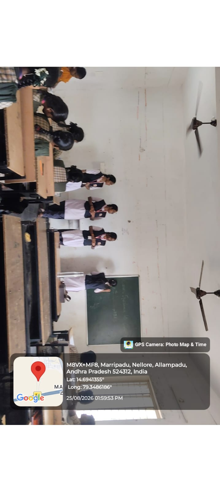
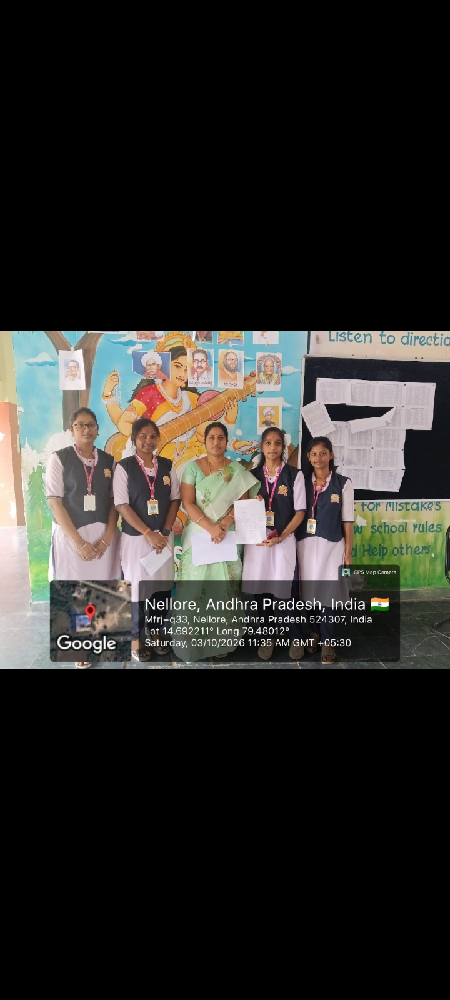
Location: AP Model School, Nandavaram, Marripadu Mandal
We returned to the school and conducted career-guidance activities with students from another Class 10 section.
| Day | Activity | Observations / Notes |
|---|---|---|
| Day 1 | Returned to the school and met the section teacher. | Explained our plan to conduct the activity with another Class 10 section. |
| Day 2 | Introduced the project to the new students. | Explained the project's purpose and invited students to consider their interests. |
| Day 3 | Discussed streams and subject choices. | Presented Science, Commerce, and Arts & Humanities and examples of further study. |
| Day 4 | Discussed career pathways and answered questions. | Shared government and private-sector career examples and listened to student questions. |
| Day 5 | Reviewed the sessions and documented responses. | Summarised topics, common questions, and student interests. |
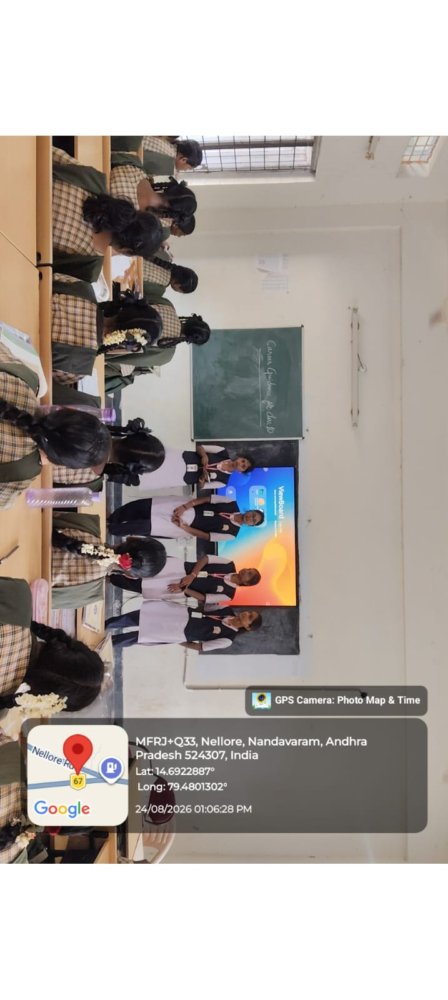
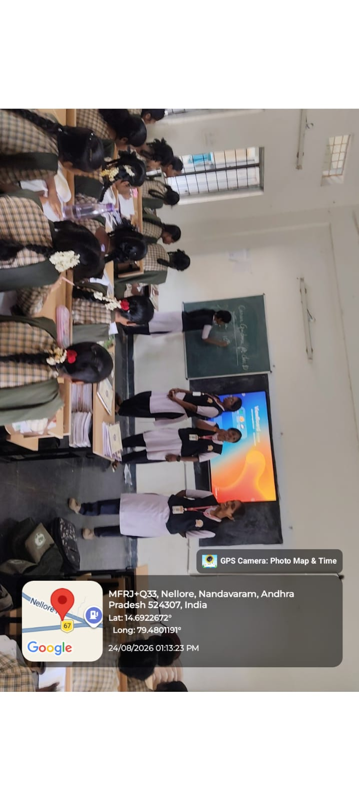
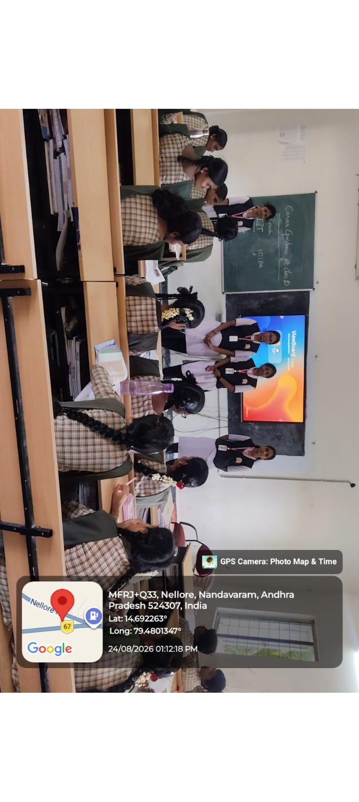
All team members discussed the problems and information gaps observed during our student interactions.
| Day | Activity | Observations / Notes |
|---|---|---|
| Day 1 | Shared team observations. | Each member described notes from student interactions and guidance sessions. |
| Day 2 | Reviewed students' questions. | Discussed questions about streams, courses, qualifications, and career opportunities. |
| Day 3 | Identified common challenges. | Compared observations to find recurring difficulties students faced exploring careers. |
| Day 4 | Discussed improvements to our guidance. | Considered ways to present information clearly and help students compare options. |
| Day 5 | Recorded conclusions and follow-up topics. | Summarised the discussion and listed topics to clarify in project materials. |
We introduced Aether Path to students, demonstrated its career-guidance information, and collected their feedback about the application.
| Day | Activity | Observations / Notes |
|---|---|---|
| Day 1 | Prepared the application demonstration. | Organised the Aether Path sections and planned how to introduce them to students. |
| Day 2 | Introduced Aether Path. | Explained how the application can help students explore options after Class 10. |
| Day 3 | Demonstrated the guidance features. | Showed students how to explore streams, career pathways, and study information. |
| Day 4 | Helped students explore the information. | Students reviewed options and considered subjects or careers they wanted to learn more about. |
| Day 5 | Collected feedback about the application. | Invited students to share what was helpful and what could be clearer or improved. |